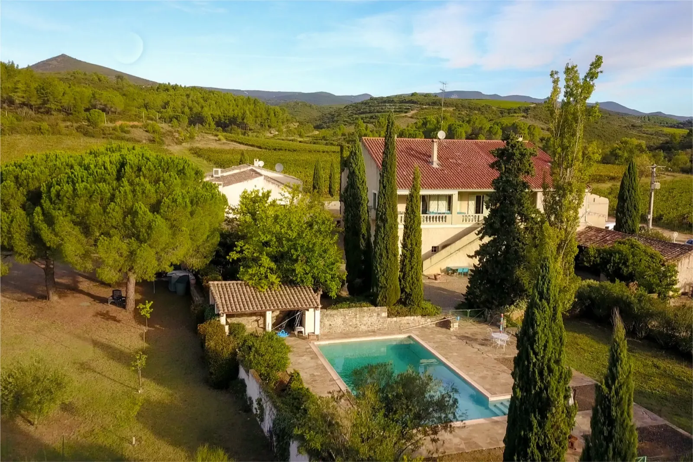
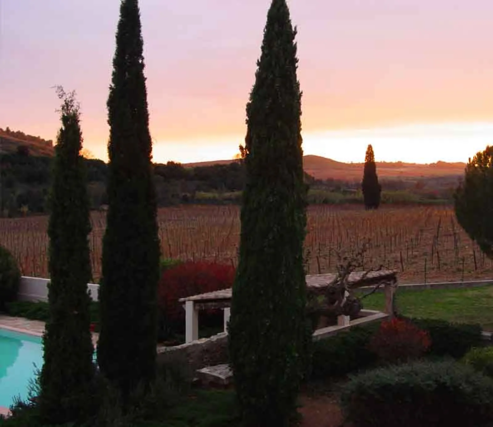
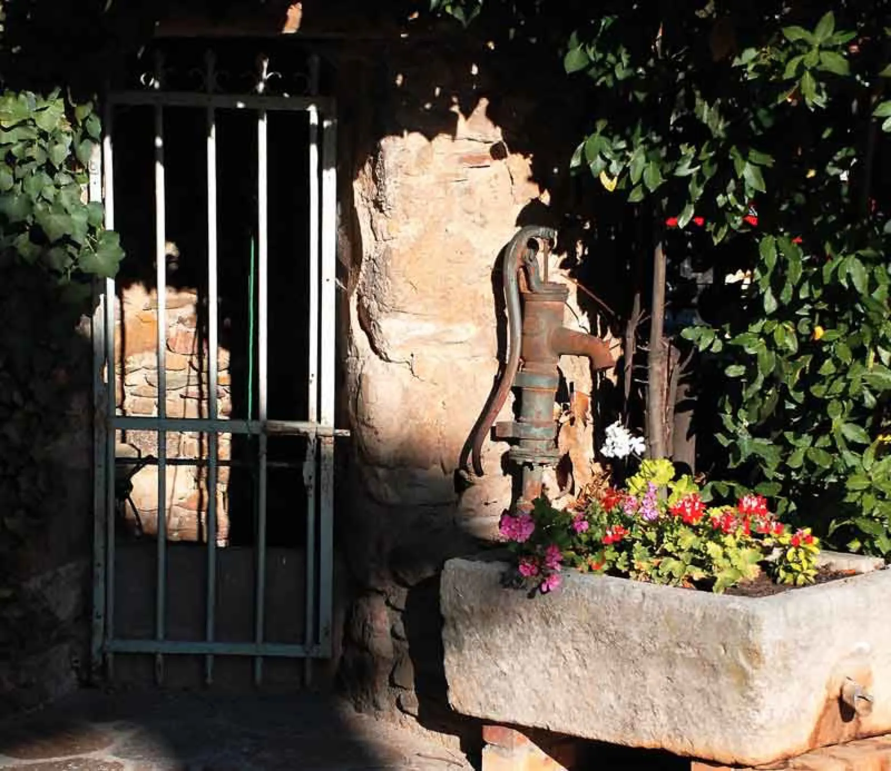
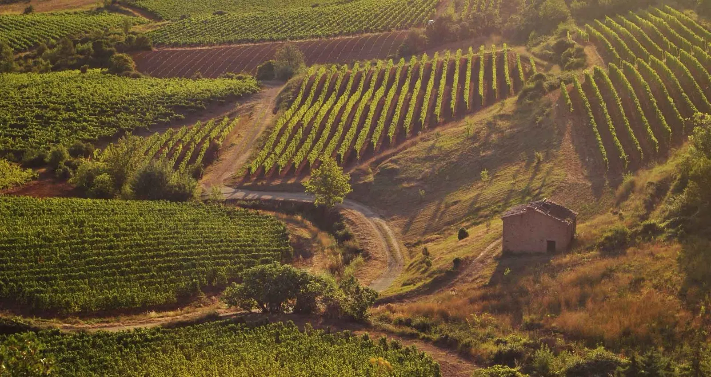
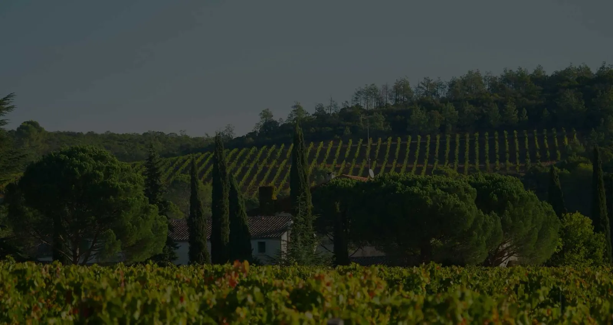

Grands vins du Languedoc, entre schistes et calcaires.
Au pied de la Montagne noire, nos 32 hectares de vignes en Saint-Chinian et Roquebrun donnent deux visages : des vins structurés, fruités et élégants sur les calcaires, soyeux et veloutés sur les schistes.
Famille Barbe, propriétaires vignerons · Causses-et-Veyran, à 20 minutes de Béziers

Lieu-dit Fonsalade, Causses-et-VeyranUne histoire de passion, autour d'une source.
Les premiers vignerons, venus des alentours de Saint-Pons-de-Thomières, se sont installés autour d'une source d'eau naturelle, riche en bicarbonate de sodium. Son goût très légèrement salé a donné son nom au domaine : « Funt Salad » en vieil occitan.
C'est à partir de 1839 que les ventes de vin sont enregistrées sous le nom Château Fonsalade. Sur la voie d'Arles, les pèlerins en route pour Saint-Jacques-de-Compostelle y trouvaient l'hospitalité.
La famille Barbe a repris la propriété en 2014. Famille d'entrepreneurs depuis plusieurs générations, elle s'est lancée dans cette aventure viticole avec passion, attachée à l'amitié et au travail d'équipe.



Coteaux de vignes et capitelleUne mosaïque de sols sur une faille géologique.
Le domaine se situe sur une faille géologique. Les schistes et les argilo-calcaires dominent, mais nous travaillons sur pas moins de sept types de sols différents, avec une grande variété d'expositions et d'altitudes.
- Plaine et coteauxLes parcelles les plus hautes atteignent 350 mètres d'altitude, sur les hauteurs de Roquebrun.
- Un terroir plus fraisGénéralement 3 à 4 °C de moins que le reste de l'appellation : cette fraîcheur marque les vins de Fonsalade.
- Vendanges à la mainLa majorité, la nuit ou au lever du jour exclusivement, pour démarrer les fermentations sous 14 °C et garder le maximum d'arômes.
- Parcelle par parcelleChaque parcelle est vinifiée séparément, pour garder ses caractéristiques.
« Trois cyprès plantés à l'entrée du domaine signifiaient que les pèlerins pouvaient s'arrêter boire, manger et dormir. »
Ils sont aujourd'hui sur notre logo, trait d'union entre passé et présent.
Nos vins : rouge, blanc ou rosé.
Il y en a pour tous les goûts et toutes les papilles. Les cuvées Château Fonsalade et Felix Culpa sont issues de parcelles uniques, identiques année après année.
Felix Culpa
Saint-Chinian rougeChâteau Fonsalade
Saint-Chinian rougeCuvée F
Saint-Chinian rougePetit Bonheur
Pays d'Oc rougePetit Bonheur rosé
Rosé
Visiter le domaine
Sillonnez avec nous le domaine et découvrez nos cépages, et comment ils expriment la richesse des terroirs, en dégustant une sélection de nos cuvées les plus emblématiques.

Le caveau est ouvert
- Lundi au vendredi
- 10h – 17h
- Samedi
- sur rendez-vous
- Dimanche
- fermé
Atelier dégustation
Une visite du vignoble, suivie d'une dégustation à la carte au bar du caveau ou dans une salle privative. Nos sommeliers vous révèlent les secrets des vins Fonsalade.
Visite des vignes
À pied, à vélo ou avec des ânes, parcourez le domaine et la mosaïque de terres qui fait nos cuvées.
Notre gîte
La grande maison du domaine fait office de gîte : plus de 10 chambres, pour vos retrouvailles entre amis ou vos événements.
-
Le gîte et les visites se demandent par téléphone ou par écrit. 20 minutes de Béziers, 45 de Narbonne, une heure de Montpellier.
Venir à Fonsalade
Le domaine se trouve à une vingtaine de kilomètres au nord de Béziers, au pied de la Montagne noire. Appelez-nous ou écrivez-nous pour préparer votre venue.
- Téléphone
- 04 49 06 82 50
- Adresse
- Château Fonsalade
Lieu-dit Fonsalade
34490 Causses-et-Veyran - Caveau
- Lundi au vendredi, 10h – 17h
Samedi sur rendez-vous